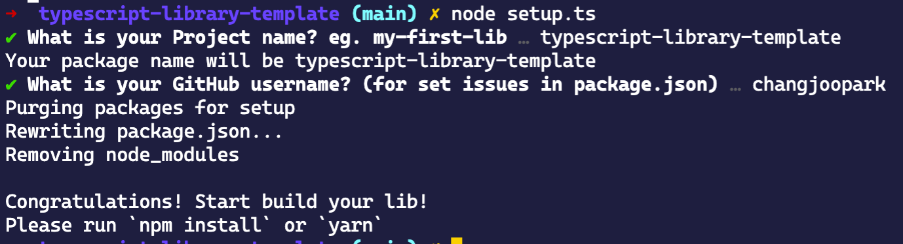

TypeScript Library Template
The typescript library template for both node.js and browser. This template based on tsdx.
Usage
Click use this template

Open your terminal and follow this lines
git clone <this repository url> <package name>
cd <package name>
npm install # For setup
node setup.ts # For fill your new npm with interactive shell

npm install # For clean your dependencies
code . # Or open your favorite editor.
# Start build your own package!
Development
Contributors
You can first contributor of this template!